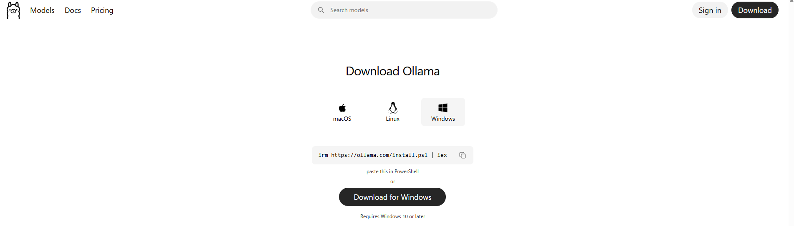
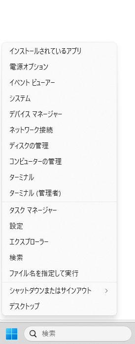
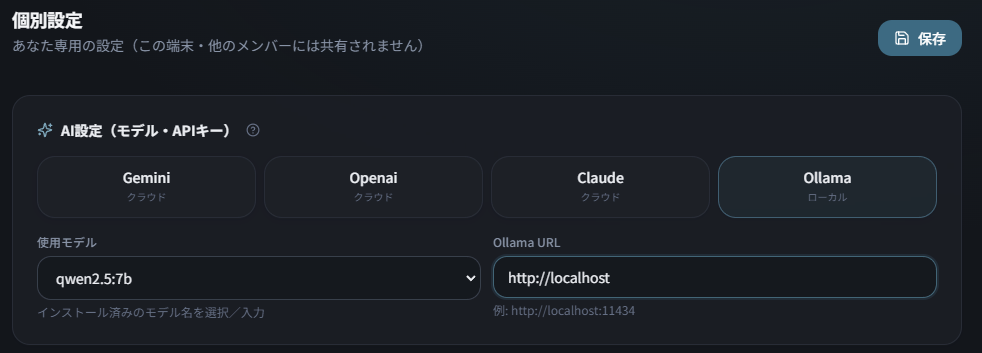

導入手順（Ollama）
MailBridgeのローカルAIは「Ollama（オラマ）」という無料ソフトを使います。次の4ステップです。
Ollama をインストール
ollama.com/download を開き、Windows版をダウンロード → OllamaSetup.exe を実行してインストールします。完了すると、画面右下のタスクトレイにOllamaが常駐します（自動で起動します）。

モデルをダウンロード
スタートボタンを右クリックして「ターミナル」を開きます。

開いたターミナルに次のコマンドを貼り付けて Enter。MailBridge推奨の日本語モデル qwen2.5:7b（約4.7GB）をダウンロードします。
ollama pull qwen2.5:7b
※ダウンロードに数分〜十数分かかります。完了するまで待ちます。空き容量を5GB以上あけておいてください。実行すると、次のように進みます（イメージ）。
動作を確認
次のコマンドで、ダウンロード済みのモデル一覧に qwen2.5:7b が表示されればOKです。
ollama list
試しに会話したい場合は ollama run qwen2.5:7b を実行（終了は /bye と入力）。
※「qwen2.5:7b」が表示されていればダウンロード成功です（イメージ）。
MailBridgeに設定
MailBridgeで 個別設定 →「AI設定（モデル・APIキー）」を開き、次のように設定して 保存 します。APIキーは不要です。
- ・プロバイダ：Ollama（ローカル）
- ・使用モデル：
qwen2.5:7b - ・Ollama URL：
http://localhost:11434
Ollamaは各自のPC内で動作します。ローカルAIを使う各PCに、OllamaとモデルをインストールしてからこのAI設定を行ってください。

うまくいかない時は、AIに手伝ってもらう
コマンドが不安、エラーが出た——そんな時は、下の文章をそのままコピーして、ChatGPT・Copilot・Geminiなど手元のAIに貼り付けてください。あなたのPCに合わせて、1ステップずつ手取り足取り教えてくれます。
私はWindowsのパソコンに、無料のローカルAI「Ollama」をインストールして、メール業務アプリ「MailBridge」で使いたい初心者です。 ・入れたいモデル：qwen2.5:7b ・私のパソコン：（ここにスペックを書く。例：NVIDIA RTX4060・VRAM8GB／メモリ16GB。わからなければ「わからない」と書いてOK） 次のことを、コマンドはそのままコピペできる形で、専門用語にはやさしい説明をつけて、1ステップずつ順番に教えてください。 1. Windows版Ollamaのインストール方法 2. モデル「qwen2.5:7b」のダウンロード方法（ollama pull） 3. ちゃんと動いているかの確認方法（ollama list） 4. MailBridgeの「設定→社内設定→AI設定」で、プロバイダにOllama、モデルにqwen2.5:7b、URLに http://localhost:11434 を設定する方法 5. もしエラーが出たときの代表的な対処法
※（ ）の部分は、自分のパソコンに合わせて書き換えてください。スペックの調べ方はこちら。
モデルの選び方
迷ったら qwen2.5:7b（日本語が得意・MailBridge推奨）でOKです。PCに余裕があれば、より大きいモデルも選べます。コマンドの qwen2.5:7b の部分を入れ替えるだけです。
Qwen2.5 7B
推奨日本語が得意。分類・抽出・簡単な返信に。約4.7GB。
ollama pull qwen2.5:7b
Llama 3.1 8B
英語寄り。分類・抽出向き。約4.9GB。
ollama pull llama3.1:8b
Gemma 2 9B
中〜強。分類・抽出・返信に。約5.4GB。
ollama pull gemma2:9b
困ったときは
Q. MailBridgeで「Ollama 呼び出し失敗」と出る
Ollamaが起動しているか確認してください（タスクトレイにアイコン）。URLが http://localhost:11434 になっているか、モデル名が ollama list の表示と一致しているかも確認します。
Q. 処理がとても遅い
GPUがないPCや、本文の長いメールでは時間がかかります。シミュレーターで「実用」以上のPCを推奨します。難しい場合は、クラウドの Gemini（無料枠あり）も検討してください。
Q. それでも解決しない
上の「AIに貼り付けるプロンプト」を使うか、お気軽にお問い合わせください。yh.006611@gmail.com
クラウドAIと迷ったら？
手軽さならクラウド（Gemini等）、料金ゼロ・社外非送信ならローカル。両方その場で比べられます。